Find a dictation in seconds, copy it again, and see exactly what was kept from what was said.
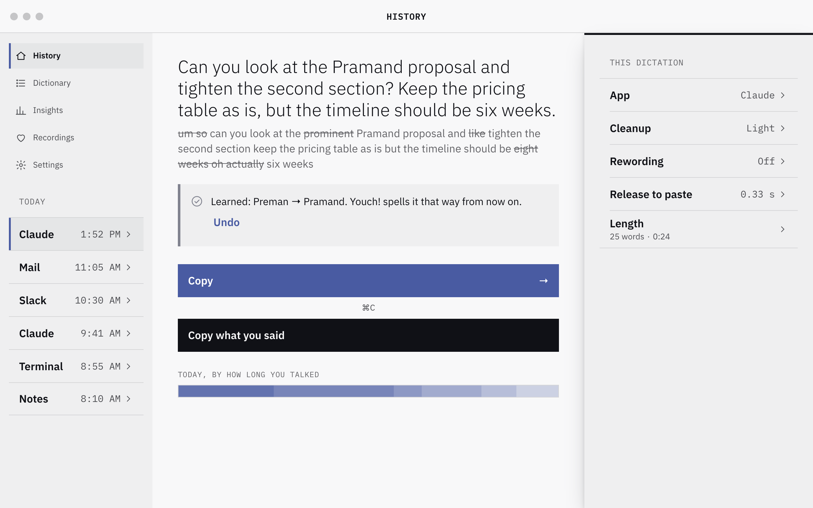
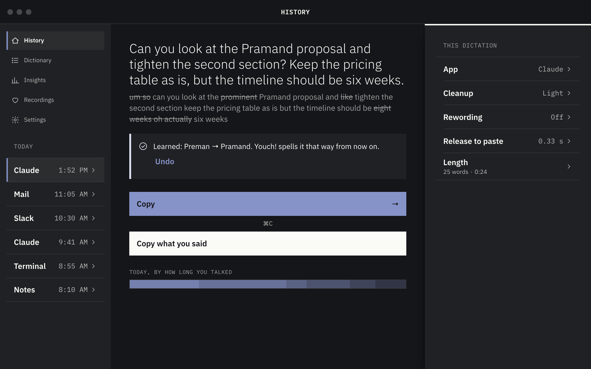
Teach Youch! the names Walker says, and see what it has learned from his fixes.
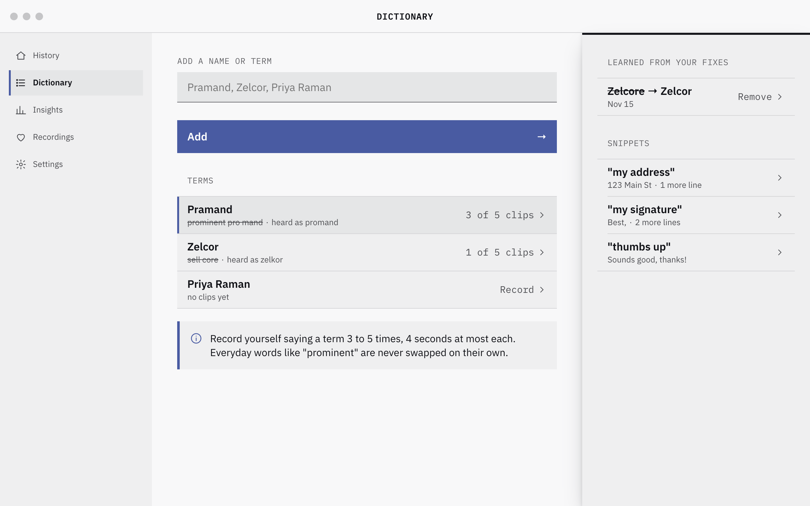
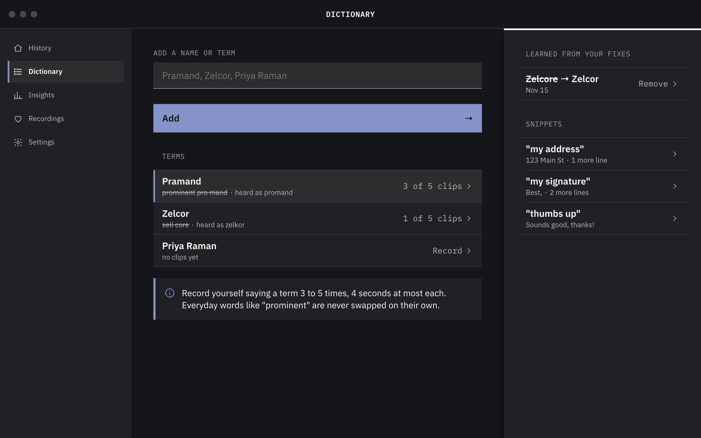
Show how Walker thinks out loud this week, in one number and one shape.
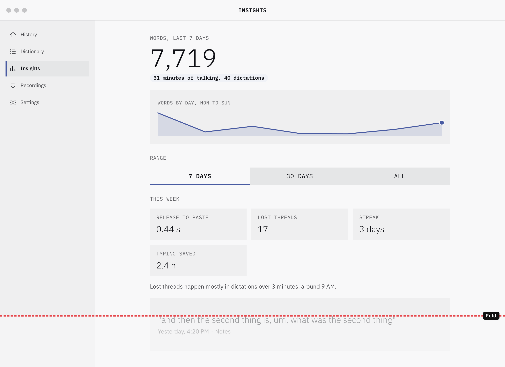
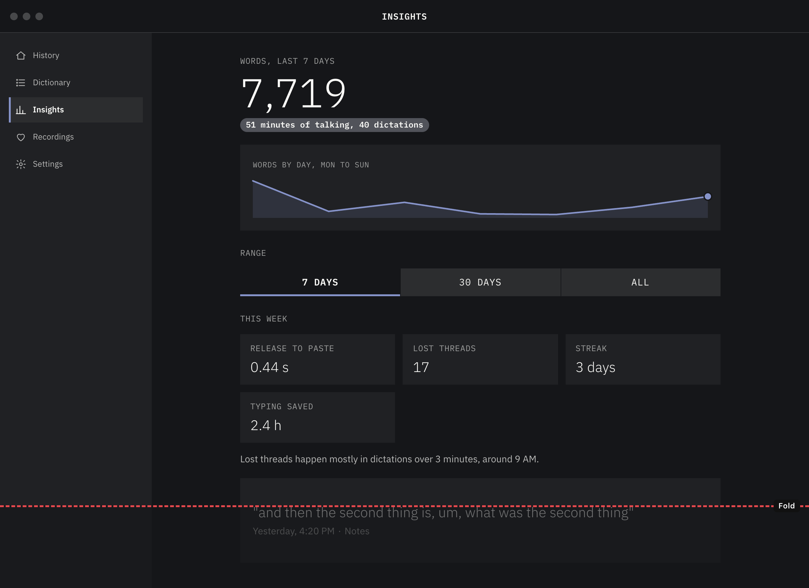
Read a meeting as who said what, and name the speakers once.
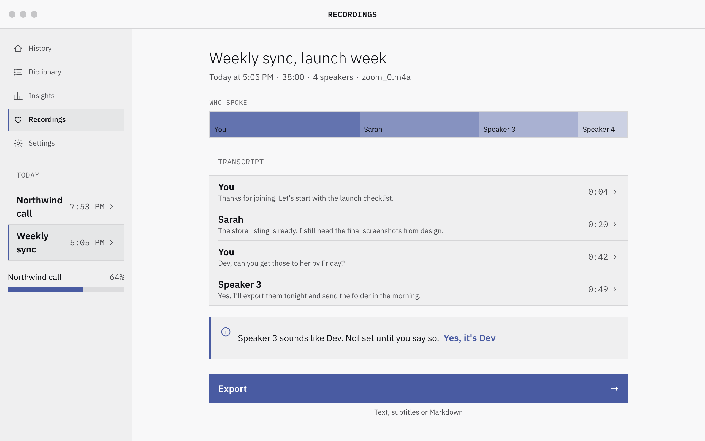
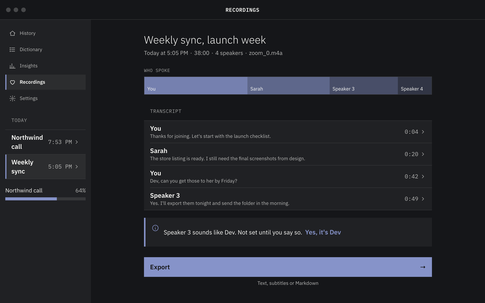
Set the key, the two dials and the basics, then get out.
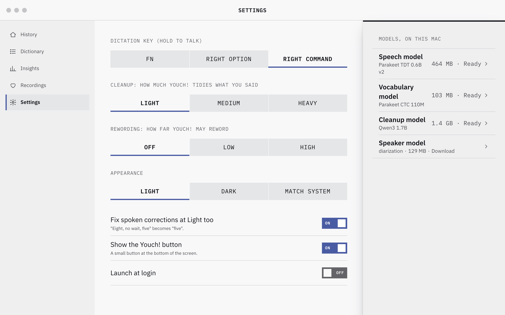
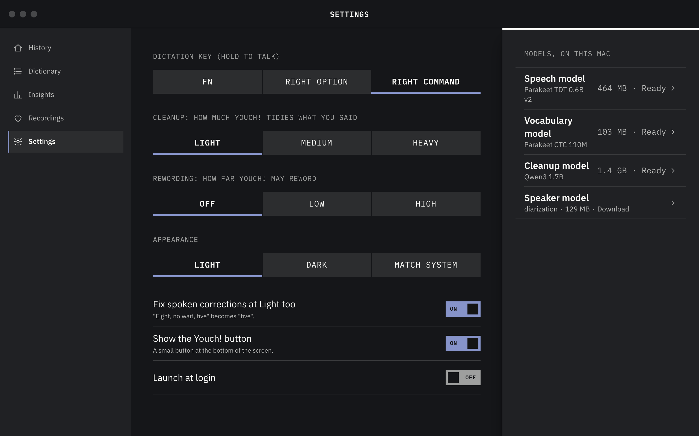
Say what Youch! is in one line and start setup.
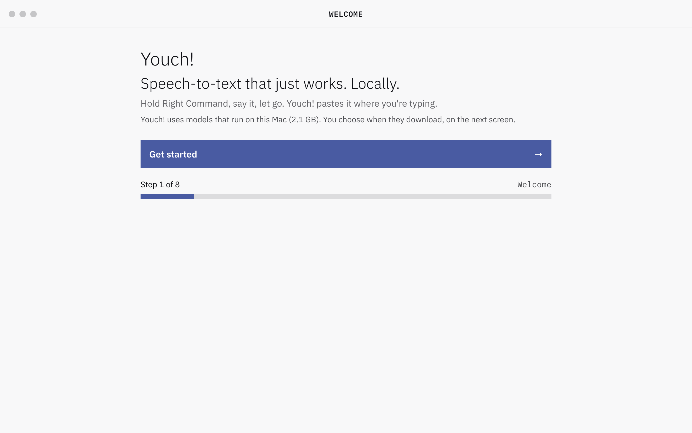
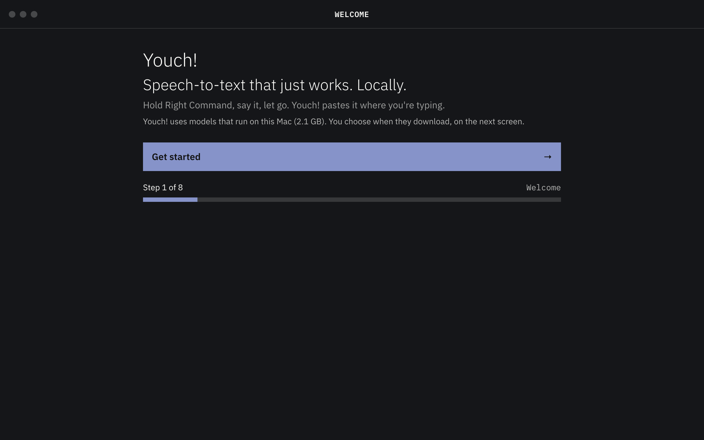
Let Walker dictate once into a practice box and see it work.
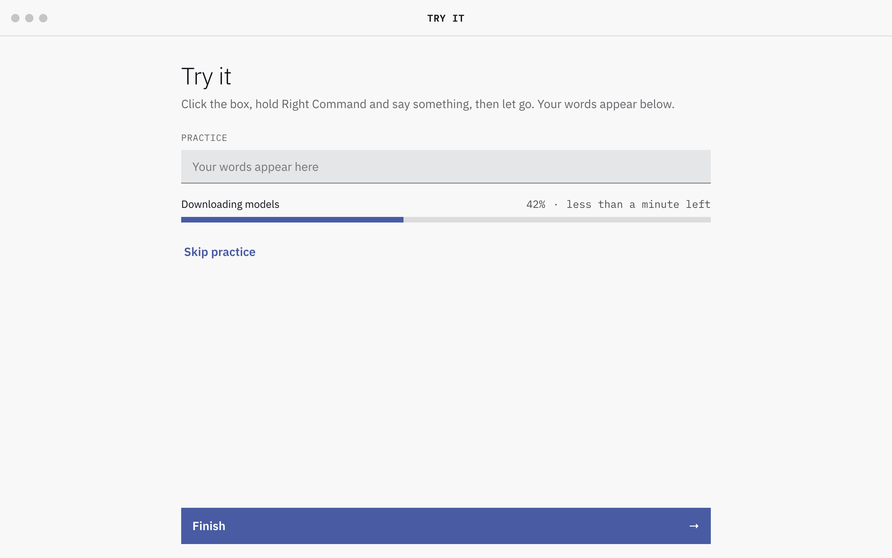
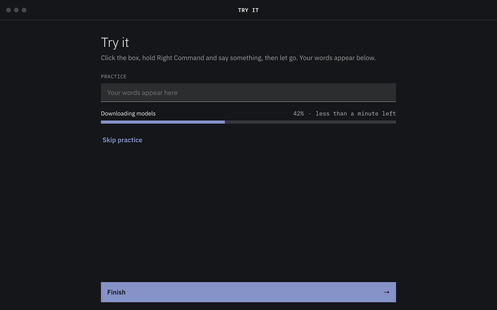
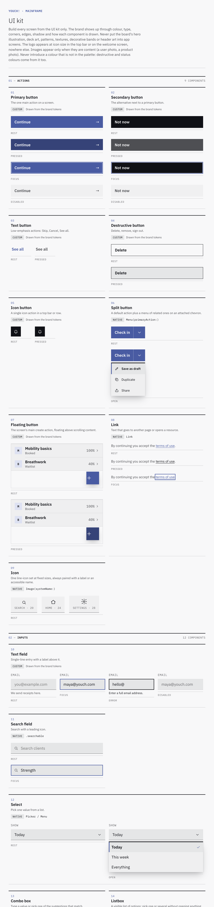
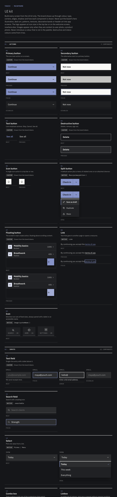